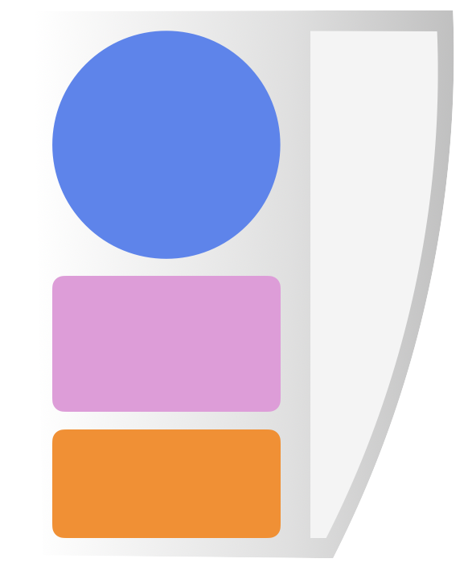
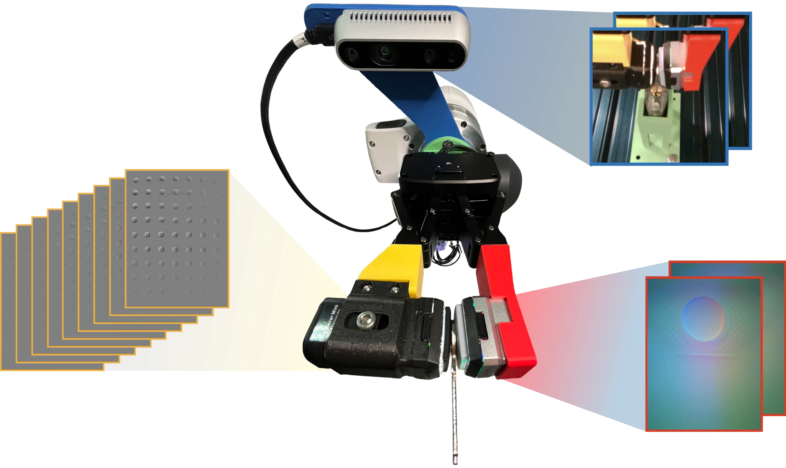
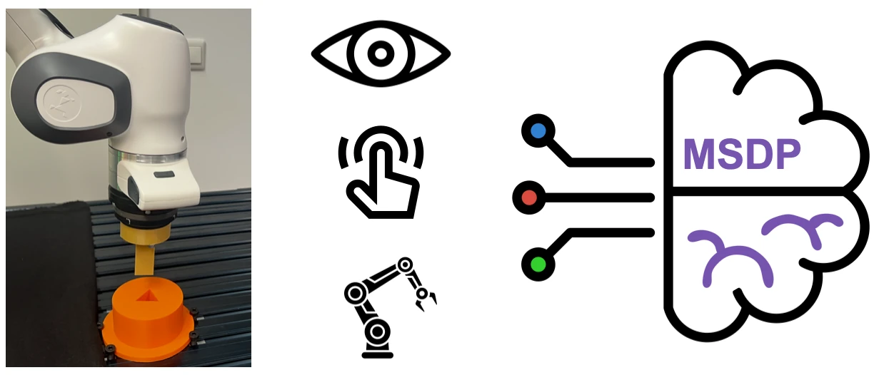
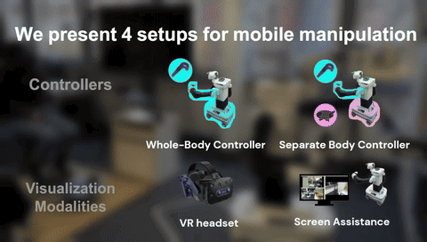
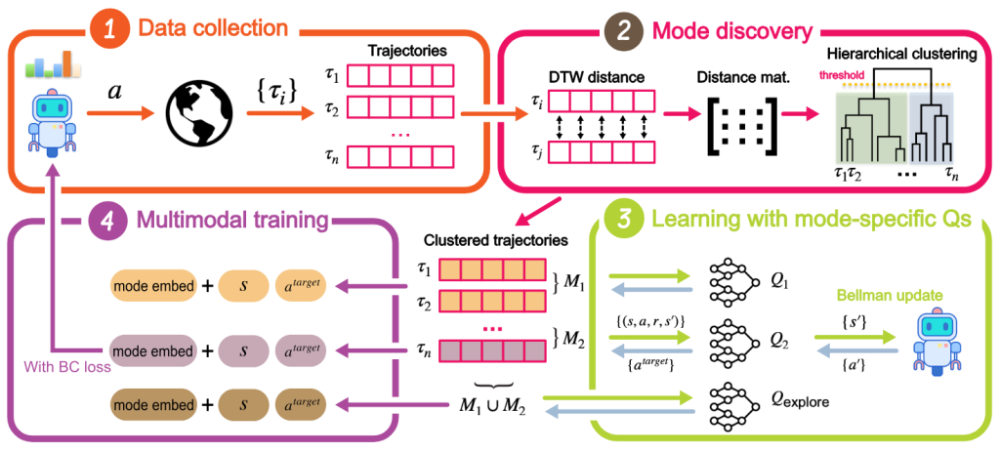

Gave a talk at the RIG Fall 2026 workshop Bridging Manipulation, Perception, and Learning.
About
Multisensory Robot Learning
I am a PhD researcher in the Interactive Robot Perception & Learning (PEARL) Lab at TU Darmstadt, where I joined in August 2023, advised by Prof. Georgia Chalvatzaki.
My research focuses on multisensory robot learning — pretraining on vision, force, and proprioception to enable efficient real-world reinforcement learning. It also spans, combining tactile sensors that operate at different spatial and temporal resolutions to solve complex tasks through imitation learning, as well as collecting and learning from vision-tactile-audio data. The goal is to advance robots' perception of the world to solve complex manipulation tasks.
I hold master's degrees in Computational Engineering and Autonomous Systems from the Technical University of Darmstadt, specializing in robotics and artificial intelligence. Previously, I completed my B.Sc. in Mechanical Engineering.
News
Multi-Resolution Tactile Imitation Learning for Contact-Rich Robotic Manipulation accepted at CoRL 2026.
“Multi-Resolution Tactile Imitation Learning for Contact-Rich Robotic Manipulation” selected as an award finalist at the IROS 2026 Workshop on Scalable Tactile Sensing for Dexterous Manipulation.
Both “Self-Supervised Multisensory Pretraining” and “Multi-Resolution Tactile Imitation Learning” selected as award finalists at the 1st International Workshop on Industrial Applications for Robot Learning, IROS 2026.
Attended the Touch Sensing and Processing Summer School and the International Workshop on Intelligent Autonomous Learning Systems (IWIALS) 2026.
Gave a Young Speakers Talk at the IROS workshop Touch-to-Action.
Attended the RPL Summer School at KTH and ICRA 2026 in Vienna.
“Self-Supervised Multisensory Pretraining for Contact-Rich Robot Reinforcement Learning” published in IEEE Robotics and Automation Letters.
Multi-Resolution Tactile Imitation Learning for Contact-Rich Robotic Manipulation released as a preprint.
Attended the German Robotics Conference (GRC) 2026.
Gave a talk at PINLab, Sapienza University of Rome.
Attended CoRL 2025 and Humanoids 2025.
“The Role of Embodiment in Intuitive Whole-Body Teleoperation for Mobile Manipulation” accepted at Humanoids 2025.
Attended IWIALS 2025.
Organized IWIALS 2024, the International Workshop on Intelligent Autonomous Learning Systems, with over 100 researchers from 7 labs.
Joined the Interactive Robot Perception & Learning (PEARL) Lab at TU Darmstadt as a PhD researcher.
Attended IWIALS 2023.
Publications


CoRL 2026
Multi-Resolution Tactile Imitation Learning for Contact-Rich Robotic Manipulation
Award finalist — 1st International Workshop on Industrial Applications for Robot Learning, IROS 2026
Award finalist — IROS 2026 Workshop on Scalable Tactile Sensing for Dexterous Manipulation

IEEE RA-L 2026
Self-Supervised Multisensory Pretraining for Contact-Rich Robot Reinforcement Learning
Award finalist — 1st International Workshop on Industrial Applications for Robot Learning, IROS 2026

